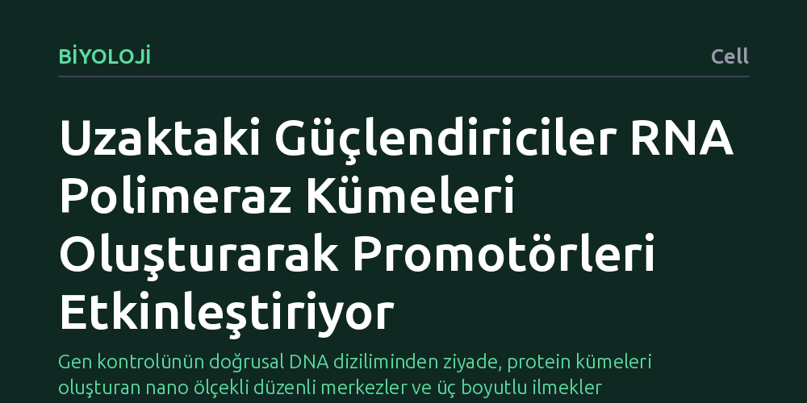

BIYOLOJI · Cell · 2026-10-15
Araştırmacılar, uzaktaki düzenleyici bölgelerin hedef genlerle nasıl iletişim kurduğunu tek gen düzeyinde gerçek zamanlı nano-görüntülemeyle inceledi. Kohezin proteiniyle yaklaştırılan güçlendiricilerin RNA Polimeraz II kümeleri barındırdığı ve promotörü içine çekerek transkripsiyonu başlattığı bulundu.
Gen kontrolünün doğrusal DNA diziliminden ziyade, protein kümeleri oluşturan nano ölçekli düzenli merkezler ve üç boyutlu ilmekler aracılığıyla gerçekleştiğini ortaya koyar.

Hücrelerimizin çekirdeğindeki DNA metrelerce uzunlukta olmasına rağmen mikroskobik bir alana sıkıştırılmıştır. Bir genin ne zaman ve ne kadar okunacağını belirleyen kontrol şalterleri, yani güçlendiriciler (enhansırlar), genellikle genin kendi başlangıç noktası olan promotörden oldukça uzakta yer alır. Biyolojide uzun süredir yanıtı aranan temel soru, bu kadar uzakta bulunan düzenleyici bölgelerin hedef genle nasıl fiziksel temas kurduğu ve gen ifadesini nasıl hassas bir zamanlamayla tetiklediğidir.
Bu sorunun aydınlatılması, yalnızca hücrenin temel işleyişini kavramakla kalmayıp, gen düzenleme mekanizmalarının bozulmasıyla ortaya çıkan genetik ve gelişimsel hastalıkların kökenini anlamak açısından da kritik bir öneme sahiptir. Genlerin rastgele moleküler çarpışmalarla mı yoksa belirli bir mimari düzen içinde mi etkinleştiğini bilmek, genomun üç boyutlu yapısının hücresel kaderi nasıl belirlediğini ortaya koymaktadır.
Geleneksel moleküler biyoloji yöntemleri, genellikle milyonlarca hücrenin parçalanıp kimyasal olarak sabitlenmesine dayanır. Bu durum, incelenen süreçlerin anlık ve hücresel düzeydeki dinamiklerini gizleyerek yalnızca kaba bir ortalama sunar.
Araştırmacılar bu sınırlamayı aşmak için tek gen düzeyinde yüksek çözünürlüklü gerçek zamanlı nano-görüntüleme (nanoskopi) tekniğini kullandı. Canlı hücrelerde hem uzaktaki güçlendirici hem de hedef promotör bölgesi floresan işaretleyicilerle eşzamanlı olarak izlendi; böylece iki bölgenin mekânsal etkileşimi ile RNA üretiminin başladığı anlar doğrudan kaydedildi.
Gerçek zamanlı gözlemler, genom üzerindeki bu iki uzak noktanın rastlantısal olarak karşılaşmadığını, kohezin adı verilen halka yapılı protein kompleksinin DNA'yı kaydırıp ilmek oluşturmasıyla (loop extrusion) aktif olarak yan yana getirildiğini gösterdi. Kohezin aracılığıyla sağlanan bu fiziksel yakınlaşma, güçlendirici ile promotör arasındaki etkileşimin zamanlamasını doğrudan belirliyordu.
Çalışmanın en şaşırtıcı bulgusu ise güçlendirici bölgesinde gözlemlendi: RNA Polimeraz II enziminin temel bileşenleri, uzaktaki güçlendiriciler üzerinde nano boyutta yoğun kümeler oluşturmaktaydı. Promotör bölgesi bu protein kümesinin içine girdiğinde, genel transkripsiyon faktörlerinin etkinliği belirgin şekilde artıyor ve gen aniden hızlı bir RNA üretim patlaması (burst) başlatıyordu.
Elde edilen bu sonuçlar, gen kontrolüne dair klasik algıyı güncellemektedir. Güçlendiriciler yalnızca DNA üzerinde pasif bağlantı noktaları değil, aynı zamanda transkripsiyon makinelerini önceden bir araya toplayan nano ölçekli yoğunlaşma merkezleridir.
Promotörün bu kümeye dahil olmasıyla tetiklenen transkripsiyon patlamaları, genlerin neden sürekli bir akış halinde değil de nöbetler halinde çalıştığını açıklığa kavuşturmaktadır. Fiziksel temasın ve protein yoğunlaşmasının anlaşılması, gen ifadesinin kontrol mekanizmalarını hedefe yönelik hücresel müdahalelerle yeniden tasarlamak için sağlam bir zemin sunmaktadır.